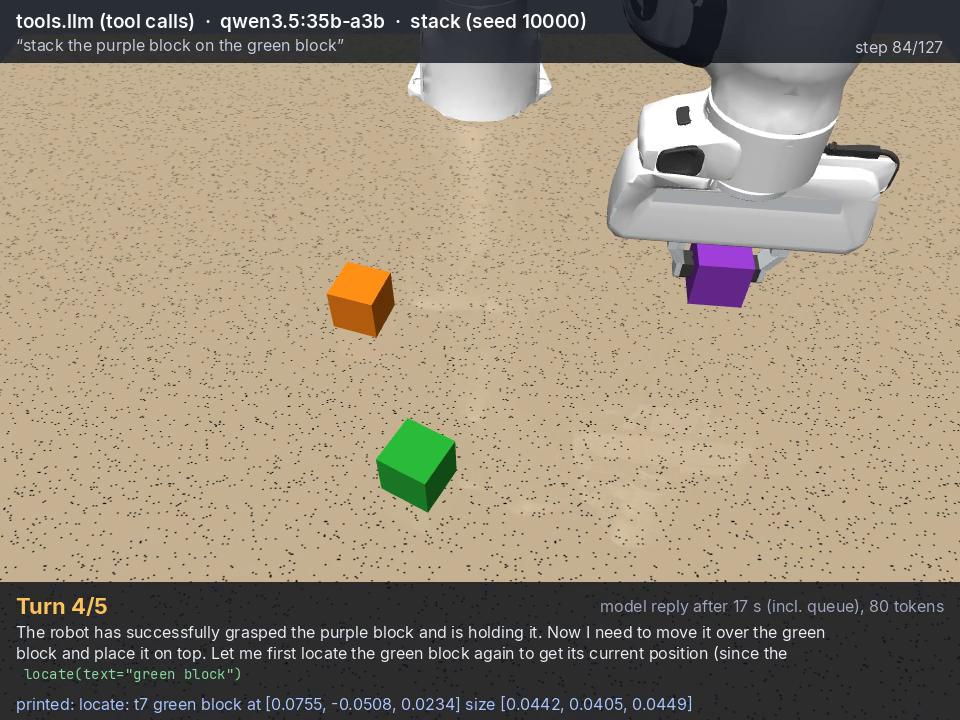

Intelligence is becoming physical.
Intelligence that stops at the screen cannot be checked against the world. Hylo gives a model a body, a task and a measured result: a general model with tools, a planner with an action model, or an action model alone, all on one kernel.
How models drive robots ↗